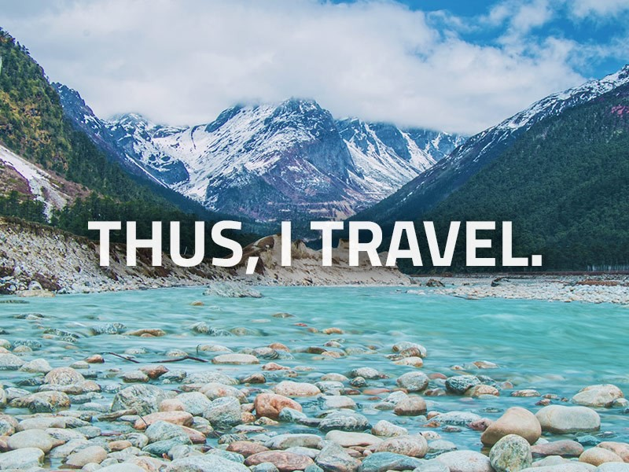

Interests
Travelling
Travelling is one of the best methods of learning. Therefore, it is very significant to travel around to learn lots of things.
I travelled to different Places in India.
Another reason why people love to travel: it helps open your mind. You realize that there’s no one way to live life. Meeting people from other places will show you that your world view isn’t the same as everyone else’s. You can’t imagine how different life is in another place until you see for yourself. Everything from work to family to beliefs to interests is not what you might expect from your own experience. The different setting will also help you discover and consider fresh ideas you hadn’t thought of before. You’ll come home with different notions and possibilities. By being exposed to new places, people and cultures, you’ll develop a wider world view. And that will make you a better-rounded global citizen. It’s a great reward and big reason why people love to travel.
Playing Sports:
Sports require memorization, repetition and learning — skillsets that are directly relevant to play.

I played Basket at College Level.
Playing sports gives me mental relaxation.
I won medals in basketball game by representing my college at district level